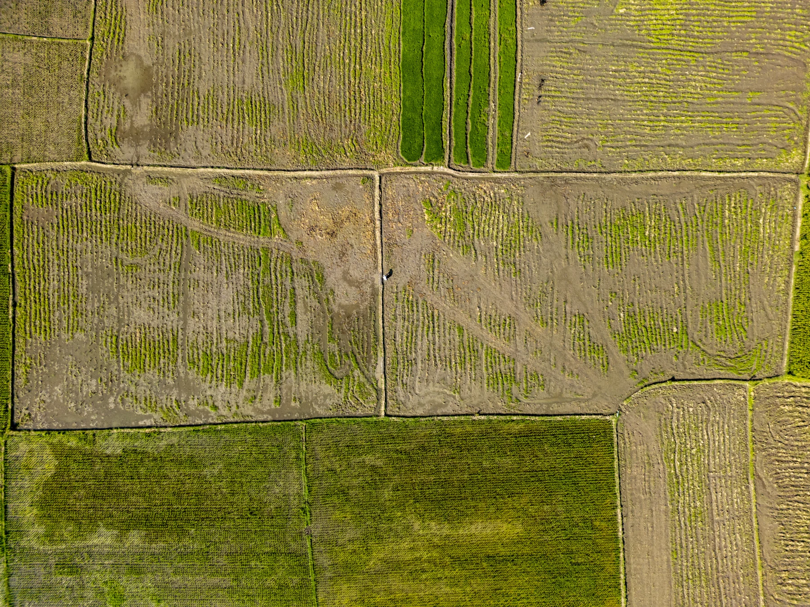
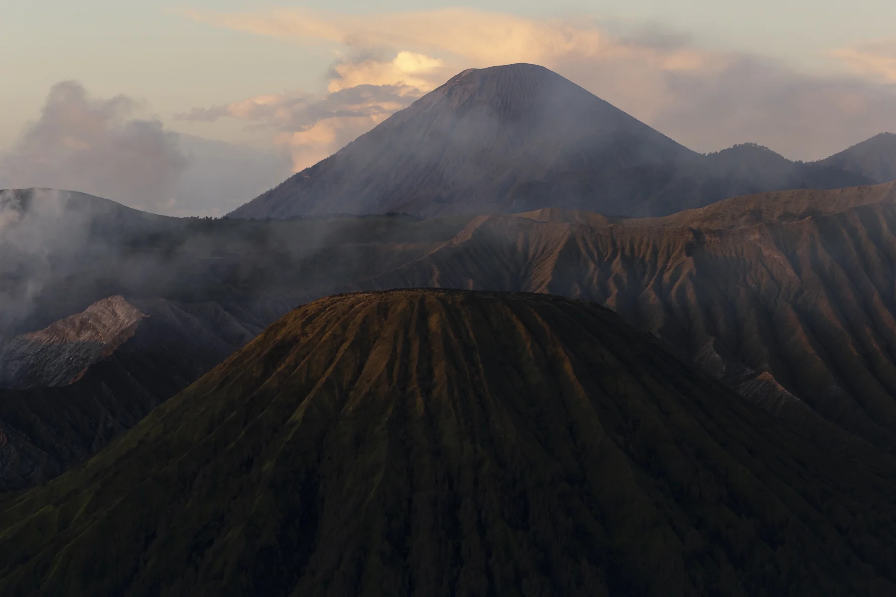
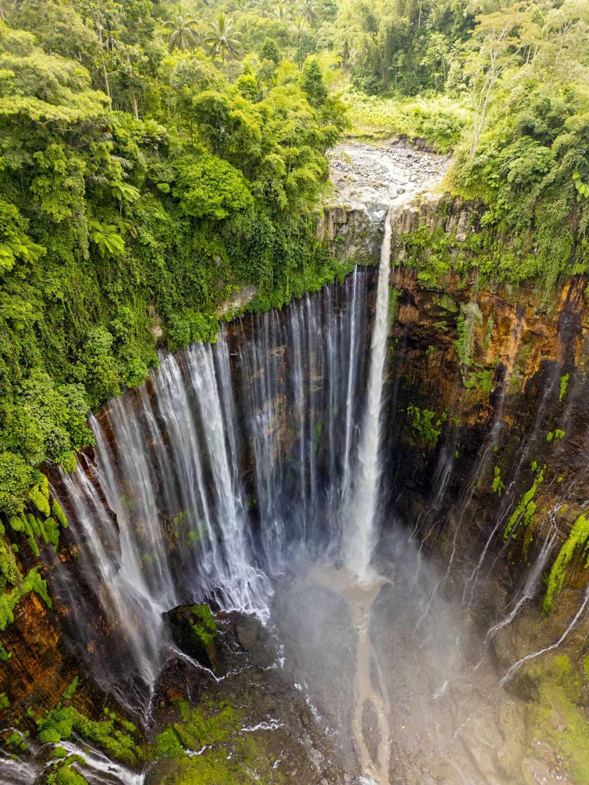
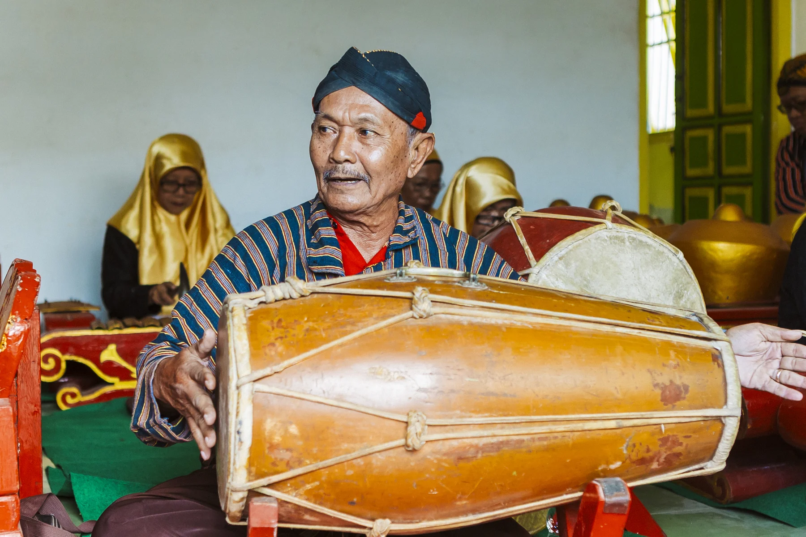
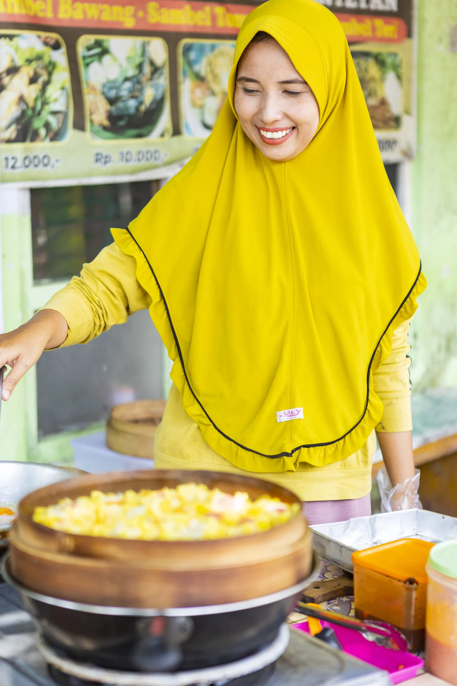
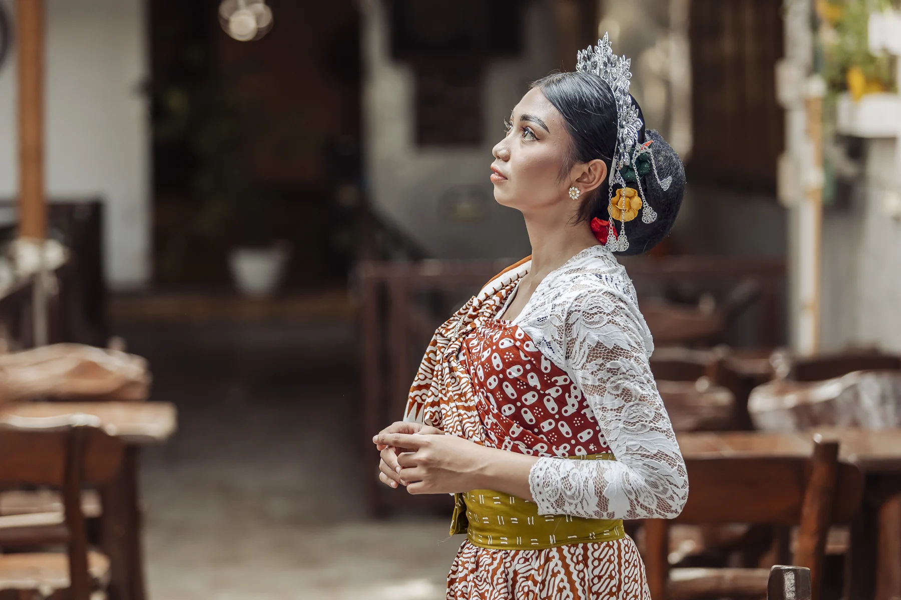

Nature & adventure
Landscapes, trails and time outdoors: imagery that helps partners understand the setting and character of an experience.

A PHOTOGRAPHY & FILM PROPOSAL FOR EXO TRAVEL
New imagery to help EXO bring its experiences to life for travel partners and their clients.
Explore the proposalTHE IDEA
EXO's Indonesia journeys connect landscapes with the people, places and experiences behind each itinerary. I would create new photography and film around the journeys you most want to promote.
From a volcanic sunrise to time spent with a local host, the aim is to give your sales and marketing teams images that help travel partners picture the experience and share it with their clients.

A PRODUCTION DESIGNED AROUND EXO
Locations and stories would be selected with your team, around the itineraries and audiences you want to reach.

Landscapes, trails and time outdoors: imagery that helps partners understand the setting and character of an experience.

Local hosts, crafts and cultural encounters, created with the people and communities involved.

Meals, stays and the details that help a traveller imagine the journey. New imagery would be produced in locations chosen with EXO.

MADE FOR HOW YOU SELL TRAVEL
Build a collection of photography and film for destination pages, trade presentations, brochures and campaigns. Your team can shape the material into its own campaign, or we can develop the campaign together.
We would agree the locations, production time, final material and usage licence together. Local guides and your destination team can help shape the production around the experiences that matter to EXO.
THE PHOTOGRAPHER
I'm Juan Aizpuru, a photographer and filmmaker based in Bilbao. I have travelled and photographed in Indonesia, and I work with a professional team to produce destination, people and travel imagery.
The photographs on this page are from my own archive and are examples of my work. A project for EXO would be created specifically for your selected experiences.
View my portfolioFITUR 2027 · LET'S MEET
I'd love to learn which Indonesian experiences and markets you want to prioritise, and discuss how a new visual production could support them.
Contact Juan